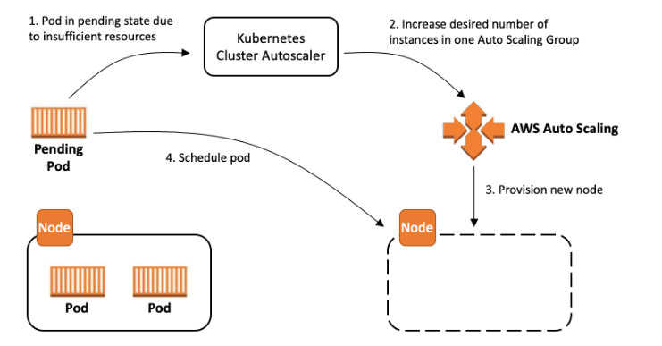
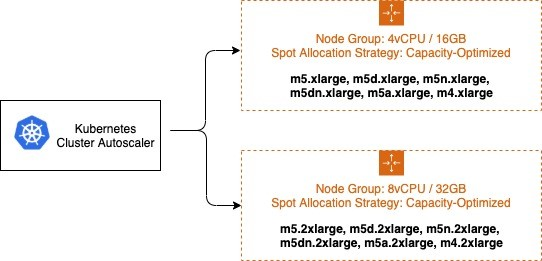

쿠버네티스 Cluster Autoscaler¶
개요¶
쿠버네티스 Cluster Autoscaler는 SIG 오토스케일링에서 유지 관리하는 인기 있는 클러스터 오토스케일링 솔루션입니다. 이는 클러스터에 리소스를 낭비하지 않고 파드를 스케줄링할 수 있는 충분한 노드가 있는지 확인하는 역할을 합니다. Cluster Autoscaler는 스케줄링에 실패한 파드와 활용도가 낮은 노드를 감시합니다. 그런 다음 클러스터에 변경 사항을 적용하기 전에 노드 추가 또는 제거를 시뮬레이션합니다. Cluster Autoscaler 내의 AWS 클라우드 공급자 구현은 EC2 Auto Scaling 그룹의 .desireReplicas 필드를 제어합니다.

이 가이드는 Cluster Autoscaler를 구성하고 조직의 요구 사항에 가장 적합한 절충안을 선택하기 위한 멘탈 모델을 제공합니다. 최상의 단일 구성은 없지만 성능, 확장성, 비용 및 가용성을 절충할 수 있는 구성 옵션 집합이 있습니다.또한 이 안내서는 AWS 구성을 최적화하기 위한 팁과 모범 사례를 제공합니다.
용어집¶
다음 용어는 이 문서 전체에서 자주 사용됩니다. 이런 용어는 광범위한 의미를 가질 수 있지만 이 문서의 목적상 아래 정의로만 제한됩니다.
확장성은 쿠버네티스 클러스터의 파드 및 노드 수가 증가할 때 Cluster Autoscaler가 얼마나 잘 작동하는지를 나타냅니다. 확장성 한계에 도달하면 Cluster Autoscaler의 성능과 기능이 저하됩니다. Cluster Autoscaler가 확장성 제한을 초과하면 더 이상 클러스터에서 노드를 추가하거나 제거할 수 없습니다.
성능은 Cluster Autoscaler가 규모 조정 결정을 얼마나 빨리 내리고 실행할 수 있는지를 나타냅니다. 완벽하게 작동하는 Cluster Autoscaler는 파드를 스케줄링할 수 없는 등의 이벤트에 대응하여 즉시 결정을 내리고 스케일링 조치를 트리거합니다.
가용성은 파드를 중단 없이 신속하게 스케줄링할 수 있다는 뜻이다. 여기에는 새로 생성된 파드를 스케줄링해야 하는 경우와 축소된 노드가 스케줄링된 나머지 파드를 종료하는 경우가 포함됩니다.
비용은 스케일-아웃 및 스케일-인 이벤트에 대한 결정에 따라 결정됩니다. 기존 노드의 활용도가 낮거나 들어오는 파드에 비해 너무 큰 새 노드를 추가하면 리소스가 낭비됩니다. 사용 사례에 따라 공격적인 규모 축소 결정으로 인해 파드를 조기에 종료하는 데 따른 비용이 발생할 수 있다.
노드 그룹은 클러스터 내 노드 그룹에 대한 추상적인 쿠버네티스 개념입니다. 이는 쿠버네티스 리소스는 아니지만 Cluster Autoscaler, 클러스터 API 및 기타 구성 요소에 추상화된 형태로 존재합니다. 노드 그룹 내의 노드는 레이블 및 테인트와 같은 속성을 공유하지만 여러 가용영역 또는 인스턴스 유형으로 구성될 수 있습니다.
EC2 Auto Scaling 그룹은 EC2의 노드 그룹 구현으로 사용할 수 있습니다. EC2 Auto Scaling 그룹은 쿠버네티스 클러스터에 자동으로 가입하고 쿠버네티스 API의 해당 노드 리소스에 레이블과 테인트를 적용하는 인스턴스를 시작하도록 구성되어 있습니다.
EC2 관리형 노드 그룹은 EC2에 노드 그룹을 구현한 또 다른 예입니다. EC2 오토스케일링 그룹을 수동으로 구성하는 복잡성을 없애고 노드 버전 업그레이드 및 정상적인 노드 종료와 같은 추가 관리 기능을 제공합니다.
Cluster Autoscaler 운영¶
Cluster Autoscaler는 일반적으로 클러스터에 디플로이먼트 타입으로 설치됩니다. 고가용성을 보장하기 위해 리더선출를 사용하지만 작업은 하나의 레플리카에서만 수행됩니다. 수평적으로 확장할 수는 없습니다. 기본 설정의 경우 제공된 설치지침을 사용하면 기본값이 기본적으로 작동하지만 몇 가지 유의해야 할 사항이 있습니다.
다음 사항을 확인하세요:
- Cluster Autoscaler 버전이 클러스터 버전과 일치하는지 확인합니다. 쿠버네티스 버전 별 공식 호환되는 버전 외에 타 버전의 호환성은 테스트 되지 않거나 지원되지 않습니다.
- 이 모드를 사용하지 못하게 하는 특정 고급 사용 사례가 없는 한 Auto Discovery를 활성화했는지 확인합니다.
IAM 역할에 최소 접근 권한 적용¶
Auto Discovery를 사용하는 경우, autoscaling:SetDesiredCapacity 및 autoscaling:TerminateInstanceInAutoScalingGroup작업을 현재 클러스터로 범위가 지정된 오토스케일링그룹으로 제한하여 최소 접근 권한을 사용하는 것을 권장합니다.
이렇게 하면 --node-group-auto-discovery 인수가 태그를 사용하여 클러스터의 노드 그룹으로 범위를 좁히지 않았더라도 (예: k8s.io/cluster-autoscaler/<cluster-name>) 한 클러스터에서 실행 중인 Cluster Autoscaler가 다른 클러스터의 노드 그룹을 수정할 수 없게 됩니다.
{
"Version": "2012-10-17",
"Statement": [
{
"Effect": "Allow",
"Action": [
"autoscaling:SetDesiredCapacity",
"autoscaling:TerminateInstanceInAutoScalingGroup"
],
"Resource": "*",
"Condition": {
"StringEquals": {
"aws:ResourceTag/k8s.io/cluster-autoscaler/enabled": "true",
"aws:ResourceTag/k8s.io/cluster-autoscaler/<my-cluster>": "owned"
}
}
},
{
"Effect": "Allow",
"Action": [
"autoscaling:DescribeAutoScalingGroups",
"autoscaling:DescribeAutoScalingInstances",
"autoscaling:DescribeLaunchConfigurations",
"autoscaling:DescribeScalingActivities",
"autoscaling:DescribeTags",
"ec2:DescribeImages",
"ec2:DescribeInstanceTypes",
"ec2:DescribeLaunchTemplateVersions",
"ec2:GetInstanceTypesFromInstanceRequirements",
"eks:DescribeNodegroup"
],
"Resource": "*"
}
]
}
노드 그룹 구성¶
효과적인 오토스케일링은 클러스터의 노드 그룹 세트를 올바르게 구성하는 것에서 시작됩니다. 워크로드 전반에서 가용성을 극대화하고 비용을 절감하려면 올바른 노드 그룹 세트를 선택하는 것이 중요합니다. AWS는 다양한 사용 사례에 유연하게 적용할 수 있는 EC2 Auto Scaling 그룹을 사용하여 노드 그룹을 구현합니다. 하지만 Cluster Autoscaler는 노드 그룹에 대해 몇 가지 가정을 합니다. EC2 Auto Scaling 그룹 구성을 이런 가정과 일관되게 유지하면 원치 않는 동작을 최소화할 수 있습니다.
다음을 확인하십시오.
- 노드 그룹의 각 노드는 레이블, 테인트, 리소스와 같은 동일한 스케줄링 속성을 가집니다.
- 혼합 인스턴스 정책의 경우 인스턴스 유형은 동일한 스펙의 CPU, 메모리 및 GPU이여야 합니다.
- 정책에 지정된 첫 번째 인스턴스 유형은 스케줄링을 시뮬레이션하는 데 사용됩니다.
- 정책에 더 많은 리소스가 포함된 추가 인스턴스 유형이 있는 경우 확장 후 리소스가 낭비될 수 있습니다.
- 정책에 리소스가 적은 추가 인스턴스 유형이 있는 경우, 파드가 해당 인스턴스에서 일정을 예약하지 못할 수 있습니다.
- 노드 수가 적은 노드 그룹보다 노드가 많은 노드 그룹이 선호됩니다. 이는 확장성에 가장 큰 영향을 미칩니다.
- 가능하면 두 시스템 모두 지원을 제공하는 EC2 기능 (예: 지역, 혼합 인스턴스 정책) 을 선호하십시오.
참고: EKS 관리형 노드 그룹을 사용하는 것을 권장합니다. 관리형 노드 그룹에는 자동 EC2 Auto Scaling 그룹 검색 및 정상적인 노드 종료와 같은 Cluster Autoscaler 기능을 비롯한 강력한 관리 기능이 포함되어 있습니다.
성능 및 확장성 최적화¶
오토스케일링 알고리즘의 런타임 복잡성을 이해하면 1,000개 노드를 초과하는 대규모 클러스터에서 계속 원활하게 작동하도록 Cluster Autoscaler를 튜닝하는 데 도움이 됩니다.
Cluster Autoscaler의 확장성을 조정하기 위한 주요한 요소는 프로세스에 제공되는 리소스, 알고리즘의 스캔 간격, 클러스터의 노드 그룹 수입니다. 이 알고리즘의 실제 런타임 복잡성에는 스케줄링 플러그인 복잡성 및 파드 수와 같은 다른 요인도 있습니다. 이런 파라미터는 클러스터의 워크로드에 자연스럽게 영향을 미치며 쉽게 조정할 수 없기 때문에 구성할 수 없는 파라미터로 간주됩니다.
Cluster Autoscaler는 파드, 노드, 노드 그룹을 포함하여 전체 클러스터의 상태를 메모리에 로드합니다. 알고리즘은 각 스캔 간격마다 스케줄링할 수 없는 파드를 식별하고 각 노드 그룹에 대한 스케줄링을 시뮬레이션합니다. 이런 요소를 조정하는 것은 서로 다른 장단점이 있으므로 사용 사례에 맞게 신중하게 고려해야 합니다.
Cluster Autoscaler의 수직 오토스케일링¶
Cluster Autoscaler를 대규모 클러스터로 확장하는 가장 간단한 방법은 배포를 위한 리소스 요청을 늘리는 것입니다. 클러스터 크기에 따라 크게 다르지만 대규모 클러스터의 경우 메모리와 CPU를 모두 늘려야 합니다. 오토스케일링 알고리즘은 모든 파드와 노드를 메모리에 저장하므로 경우에 따라 메모리 사용량이 1GB보다 커질 수 있습니다. 리소스 증가는 일반적으로 수동으로 수행됩니다. 지속적인 리소스 튜닝으로 인해 운영상의 부담이 생긴다면 Addon Resizer 또는 Vertical Pod Autoscaler 사용을 고려해 보세요.
노드 그룹 수 줄이기¶
대규모 클러스터에서 Cluster Autoscaler가 계속 잘 작동하도록 하는 한 가지 방법은 노드 그룹 수를 최소화하는 것입니다. 팀 또는 응용 프로그램별로 노드 그룹을 구성하는 일부 조직에서는 이것이 어려울 수 있습니다. 이는 Kubernetes API에서 완벽하게 지원되지만 확장성에 영향을 미치는 Cluster Autoscaler 비권장 패턴으로 간주됩니다. 다중 노드 그룹(예: 스팟 또는 GPU)을 사용하는 데에는 여러 가지 이유가 있지만, 대부분의 경우 적은 수의 그룹을 사용하면서 동일한 효과를 얻을 수 있는 대안 설계가 있습니다.
다음을 확인합니다:
- 파드 격리는 노드 그룹이 아닌 네임스페이스를 사용하여 수행됩니다.
- 신뢰도가 낮은 멀티테넌트 클러스터에서는 불가능할 수 있습니다.
- 파드 리소스 요청(request)과 리소스 제한(limit)은 리소스 경합을 방지하기 위해 적절하게 설정되었다.
- 인스턴스 유형이 클수록 빈 패킹이 최적화되고 시스템 파드 오버헤드가 줄어듭니다.
- NodeTaints 또는 NodeSelector는 파드를 예외적으로 스케줄링하는 데 사용되는 것이지, 규칙이 아닙니다.
- 리전 리소스는 멀티 가용영역을 포함하는 단일 EC2 Auto Scaling 그룹으로 정의됩니다.
스캔 간격 줄이기¶
스캔 간격(예: 10초)을 짧게 설정하면 파드를 스케줄링할 수 없을 때 Cluster Autoscaler가 최대한 빨리 응답할 수 있습니다. 하지만 스캔할 때마다 쿠버네티스 API 및 EC2 Auto Scaling 그룹 또는 EKS 관리형 노드 그룹 API에 대한 API 호출이 많이 발생합니다. 이런 API 호출로 인해 Kubernetes 컨트롤 플레인의 속도가 제한되거나 서비스를 사용할 수 없게 될 수도 있습니다.
디폴트 스캔 간격은 10초이지만 AWS에서 새로운 노드를 시작하는 데는 새 인스턴스를 시작하는 등 훨씬 더 오랜 시간이 소요됩니다. 즉, 전체 스케일업 시간을 크게 늘리지 않고도 스캔 간격을 늘릴 수 있습니다. 예를 들어 노드를 시작하는 데 2분이 걸리는 경우 스캔 간격을 1분으로 변경하면 API 호출이 6배 줄어들고 확장이 38% 느려지는 절충점이 발생합니다.
노드 그룹 간 샤딩¶
Cluster Autoscaler는 특정 노드 그룹 집합에서 작동하도록 구성할 수 있습니다. 이 기능을 사용하면 각각 다른 노드 그룹 집합에서 작동하도록 구성된 Cluster Autoscaler 인스턴스를 여러 개 배포할 수 있습니다. 이 전략을 사용하면 임의로 많은 수의 노드 그룹을 사용할 수 있으므로 확장성에 비용을 투자할 수 있습니다. 이 방법은 성능 개선을 위한 최후의 수단으로만 사용하는 것이 좋습니다.
Cluster Autoscaler는 원래 이 구성용으로 설계되지 않았으므로 몇 가지 부작용이 있습니다. 샤드(독립적으로 운영되는 노드 그룹)는 서로 통신하지 않기 때문에 여러 오토스케일러에서 동시에 스케줄링할 수 없는 파드를 스케줄링하려고 시도할 수 있습니다. 이로 인해 여러 노드 그룹이 불필요하게 확장될 수 있습니다. 이런 추가 노드는 scale-down-delay 이후 다시 축소됩니다.
metadata:
name: cluster-autoscaler
namespace: cluster-autoscaler-1
...
--nodes=1:10:k8s-worker-asg-1
--nodes=1:10:k8s-worker-asg-2
---
metadata:
name: cluster-autoscaler
namespace: cluster-autoscaler-2
...
--nodes=1:10:k8s-worker-asg-3
--nodes=1:10:k8s-worker-asg-4
다음을 확인하십시오.
- 각 샤드는 고유한 EC2 Auto Scaling 그룹 세트를 가리키도록 구성되어 있습니다.
- 리더 선출 충돌을 방지하기 위해 각 샤드는 별도의 네임스페이스에 배포됩니다.
비용 및 가용성 최적화¶
스팟 인스턴스¶
노드 그룹에서 스팟 인스턴스를 사용하면 온디맨드 요금에서 최대 90% 까지 절약할 수 있습니다. 반면 EC2에서 용량을 다시 필요로 하는 경우 언제든지 스팟 인스턴스를 중단할 수 있습니다. 사용 가능한 용량이 부족하여 EC2 Auto Scaling 그룹을 확장할 수 없는 경우 용량 부족 오류가 발생합니다. 여러 인스턴스 패밀리를 선택하여 다양성을 극대화하면 많은 스팟 용량 풀을 활용하여 원하는 규모를 달성할 가능성이 높아지고 스팟 인스턴스 중단이 클러스터 가용성에 미치는 영향을 줄일 수 있습니다. 스팟 인스턴스를 사용한 혼합 인스턴스 정책은 노드 그룹 수를 늘리지 않고도 다양성을 높일 수 있는 좋은 방법입니다. 보장된 리소스가 필요한 경우 스팟 인스턴스 대신 온디맨드 인스턴스를 사용하세요.
혼합 인스턴스 정책을 구성할 때는 모든 인스턴스 유형의 리소스 용량이 비슷해야 합니다. 오토스케일러의 스케줄링 시뮬레이터는 혼합 인스턴스 정책의 첫 번째 인스턴스 유형을 사용합니다. 후속 인스턴스 유형이 더 크면 확장 후 리소스가 낭비될 수 있습니다. 크기가 작으면 용량 부족으로 인해 파드가 새 인스턴스를 스케쥴되지 못할 수 있습니다. 예를 들어 M4, M5, M5a 및 M5n 인스턴스는 모두 비슷한 양의 CPU와 메모리를 가지고 있으며 혼합 인스턴스 정책을 적용하기에 적합합니다.EC2 Instance Selector 도구를 사용하면 유사한 인스턴스 유형을 식별할 수 있습니다.

온디맨드 및 스팟 용량을 별도의 EC2 Auto Scaling 그룹으로 분리하는 것이 좋습니다. 스케줄링 속성이 근본적으로 다르기 때문에 기본 용량 전략을 사용하는 것보다 이 방법을 사용하는 것이 좋습니다. 스팟 인스턴스는 (EC2에서 용량을 다시 확보해야 할 때) 언제든지 중단되므로 사용자는 명환한 선점 동작을 위해 선점 가능한 노드를 테인트시킵니다. 이런 경우에 파드는 명시적인 톨러레이션이 요구됩니다. 이런 테인트로 인해 노드의 스케줄 속성이 달라지므로 여러 EC2 Auto Scaling 그룹으로 분리해야 합니다.
Cluster Autoscaler에는 Expanders라는 개념이 있으며, 확장할 노드 그룹을 선택하기 위한 다양한 전략을 제공합니다.--expander=least-waste 전략은 일반적인 용도의 기본 전략으로, 스팟 인스턴스 다양화를 위해 여러 노드 그룹을 사용하려는 경우 (위 이미지 설명 참조) 조정 활동 이후에 가장 잘 활용되는 그룹을 확장하여 노드 그룹의 비용을 더욱 최적화하는 데 도움이 될 수 있습니다.
노드 그룹 / ASG 우선 순위 지정¶
Priority expander를 사용하여 우선순위 기반 오토스케일링을 구성할 수도 있습니다. --expander=priority를 사용하면 클러스터가 노드 그룹/ASG의 우선 순위를 지정할 수 있으며, 어떤 이유로든 확장할 수 없는 경우 우선 순위 목록에서 다음 노드 그룹을 선택합니다. 이는 예를 들어, GPU가 워크로드에 최적화된 성능을 제공하기 때문에 P3 인스턴스 유형을 사용하려는 경우에 유용하지만 두 번째 옵션으로 P2 인스턴스 유형을 사용할 수도 있습니다.
apiVersion: v1
kind: ConfigMap
metadata:
name: cluster-autoscaler-priority-expander
namespace: kube-system
data:
priorities: |-
10:
- .*p2-node-group.*
50:
- .*p3-node-group.*
Cluster Autoscaler는 p3-node-group이라는 이름과 일치하는 EC2 Auto Scaling 그룹을 확장하려고 시도합니다. 이 작업이 --max-node-provision-time 내에 성공하지 못하면 p2-node-group이라는 이름과 일치하는 EC2 Auto Scaling 그룹을 확장하려고 시도합니다.
이 값은 기본적으로 15분으로 설정되며 노드 그룹 선택의 속도를 높이기 위해 줄일 수 있습니다. 하지만 값이 너무 낮으면 불필요한 크기 조정이 발생할 수 있습니다.
오버프로비저닝¶
Cluster Autoscaler는 필요한 경우에만 클러스터에 노드를 추가하고 사용하지 않을 때는 노드를 제거함으로써 비용을 최소화합니다. 이는 많은 파드가 스케줄링되기 전에 노드 확장이 완료될 때까지 기다려야 하기 때문에 배포 지연 시간에 상당한 영향을 미칩니다. 노드를 사용할 수 있게 되기까지 몇 분이 걸릴 수 있으며, 이로 인해 파드 스케줄링 지연 시간이 평소보다 몇 배나 증가할 수 있습니다.
이런 스케줄링 지연은 오버프로비저닝을 사용하면 비용은 증가하나 완화될 수 있습니다. 오버프로비저닝은 클러스터 내 공간을 차지하는 우선 순위가 낮은(보통 음수) 임시 파드를 사용하여 구현됩니다. 새로 생성된 파드를 unschedulable 상태이고 우선 순위가 더 높은 경우, 임시 파드를 선점하여 공간을 확보합니다. 그러면 임시 파드는 unschedulable 상태가 되고 Cluster Autoscaler는 새 노드를 확장하도록 트리거됩니다.
오버프로비저닝으로 얻을 수 있는 또다른 다른 이점도 있습니다. 오버프로비저닝 구성이 안되어 있는 경우 사용률이 높은 클러스터에서는 파드의 preferredDuringSchedulingIgnoredDuringExecution 규칙이나 노드 어피니티 규칙으로 인하여 최적의 스케줄링 결정을 내리지 못할 수 있습니다. 이에 대한 일반적인 사용 사례는 AntiAffinity를 사용하여 가용성 영역 간에 가용성이 높은 애플리케이션의 파드를 분리하는 것입니다. 오버프로비저닝은 올바른 영역의 노드를 사용할 수 있는 가능성을 크게 높일 수 있습니다.
얼마나 많은 용량을 오버프로비저닝할 지는 조직 내에서 신중히 결정해야 할 비즈니스 사항입니다. 핵심은 성능과 비용 간의 균형입니다. 이 결정을 내리는 한 가지 방법은 평균적으로 얼마나 자주 오토스케일링되는지 빈도를 계산하고 이 값을 새 노드를 확장하는 데 걸리는 시간으로 나누는 것입니다. 예를 들어 평균적으로 30초마다 새 노드가 필요하고 EC2에서 새 노드를 프로비저닝하는 데 30초가 걸린다면, 단일 노드를 오버프로비저닝하면 항상 추가 노드를 사용할 수 있게 되므로 EC2 인스턴스 하나를 추가하는 데 드는 비용으로 예약 지연 시간을 30초까지 줄일 수 있습니다. 영역 스케줄링 결정을 개선하려면 EC2 Auto Scaling 그룹의 가용영역 수와 동일한 수의 노드를 오버프로비저닝하여 스케줄러가 수신 파드에 가장 적합한 영역을 선택할 수 있도록 하십시오.
스케일 다운 축출 방지¶
일부 워크로드는 제거하는데 비용이 많이 듭니다. 빅데이터 분석, 머신 러닝 작업, 테스트 러너는 결국에는 완료되지만 중단될 경우 다시 시작해야 합니다. Cluster Autoscaler는 scale-down-utilization-threshold 이하로 모든 노드를 축소하려고 시도하며, 이로 인해 노드에 남아 있는 모든 파드가 중단될 수 있습니다. 제거 비용이 많이 드는 파드를 Cluster Autoscaler에서 인식하는 레이블로 보호함으로써 이를 방지할 수 있습니다.
다음을 확인하십시오.
- 파드를 제거하는 데 비용이 많이 드는 코드에는
cluster-autoscaler.kubernetes.io/safe-to-evict=false라는 어노케이션이 붙어 있습니다.
고급 사용 사례¶
EBS 볼륨¶
영구 스토리지는 데이터베이스 또는 분산 캐시와 같은 스테이트풀(stateful) 애플리케이션을 구축하는 데 매우 중요합니다. EBS 볼륨은 쿠버네티스에서 이런 사용 사례를 지원하지만 특정 영역으로 제한됩니다. 각 AZ별로 별도의 EBS 볼륨을 사용하여 여러 AZ에서 샤딩하면 애플리케이션의 가용성이 높아질 수 있습니다. 그러면 Cluster Autoscaler가 EC2 오토스케일링 그룹 스케일링의 균형을 맞출 수 있습니다.
다음을 확인하십시오.
- 노드 그룹 밸런싱은
balance-similar-node-groups=true로 설정하여 활성화됩니다. - 노드 그룹은 가용영역과 EBS 볼륨이 다르다는 점을 제외하면 동일한 설정으로 구성됩니다.
공동 스케줄링¶
머신 러닝 분산 트레이닝 작업은 동일 가용영역에 노드 구성을 통해 레이턴시를 최소화함으로써 상당한 이점을 얻을 수 있습니다. 이런 워크로드는 특정 영역에 여러 개의 파드를 배포합니다. 이는 모든 공동 스케줄링된 파드에 파드 어피니티를 설정하거나 topologyKey: failure-domain.beta.kubernetes.io/zone을 사용하여 노드 어피니티를 설정함으로써 구성할 수 있다. 그러면 Cluster Autoscaler가 수요에 맞춰 특정 영역을 확장합니다. 가용영역당 하나씩 여러 EC2 Auto Scaling 그룹을 할당하여 함께 예약된 전체 워크로드에 대해 페일오버를 활성화할 수 있습니다.
다음을 확인하십시오.
balance-similar-node-groups=false를 설정하여 노드 그룹 밸런싱을 구성할 수 있습니다.- 클러스터가 리전 내 멀티 가용영역 노드 그룹과 단일 가용영역 노드 그룹으로 구성된 경우 노드 어피니티 또는 파드 선점(Preemption)을 사용되어야 합니다.
- 노드 어피니티를 사용하여 멀티 가용영역 파드가 단일 가용영역 노드 그룹에 (또는 그 반대의 경우) 스케쥴링되지 않도록 하여야 합니다.
- 단일 가용영역에 배포되어야 되는 파드가 멀티 가용영역 노드 그룹에 스케줄링되면 멀티 가용영역 파드의 용량 불균형을 초래할 수 있습니다.
- 단일 가용영역 워크로드가 중단 및 재배치를 허용할 수 있는 경우, Pod Preemption을 구성하여 지역적으로 규모가 조정된 파드가 경쟁이 덜한 구역을 선점하고 일정을 조정할 수 있도록 하십시오.
가속 하드웨어¶
일부 클러스터는 GPU와 같은 특수 하드웨어 가속기를 활용합니다. 스케일아웃 시 가속기 장치 플러그인이 리소스를 클러스터에 알리는 데 몇 분 정도 걸릴 수 있습니다. Cluster Autoscaler는 이 노드에 가속기가 있을 것이라고 시뮬레이션했지만, 가속기가 준비되고 노드의 가용 리소스를 업데이트하기 전까지는 노드에서 보류 중인 파드를 스케줄링할 수 없습니다. 이로 인해 반복적인 불필요한 확장이 발생할 수 있습니다.
또한 가속기가 있고 CPU 또는 메모리 사용률이 높은 노드는 가속기를 사용하지 않더라도 축소가 고려되지 않습니다. 이 동작은 가속기의 상대적 비용 때문에 비용이 많이 들 수 있습니다. 대신 Cluster Autoscaler는 비어있는 가속기가 있는 경우 노드 축소를 고려하는 특수 규칙을 적용할 수 있습니다.
이런 경우에 올바르게 동작하도록 가속기 노드가 클러스터에 조인하기 전에 해당 노드 kubelet에 레이블을 추가하여 설정할 수 있습니다. Cluster Autoscaler는 이 레이블을 통해 가속기 최적화 동작을 트리거합니다.
다음을 확인하세오.
- GPU 노드용 Kubelet은
--node-labels k8s.amazonaws.com/accelerator=$ACCELERATOR_TYPE으로 구성되어 있습니다. - 가속기가 있는 노드는 위에서 언급한 것과 동일한 스케줄링 속성 규칙을 준수합니다.
0부터 스케일링¶
Cluster Autoscaler(CA)는 노드 그룹을 0까지 또는 0부터 확장할 수 있어 비용을 크게 절감할 수 있습니다. CA는 오토 스케일링 그룹(ASG)의 LaunchConfiguration 또는 LaunchTemplate에 지정된 인스턴스 유형을 검사하여 ASG의 CPU, 메모리 및 GPU 리소스를 파악합니다. 일부 파드는 LaunchConfiguration에서 검색할 수 없는 WindowsENI, PrivateIPv4Address, NodeSelector 또는 테인트와 같은 추가 리소스가 필요합니다. Cluster Autoscaler는 EC2 ASG의 태그에서 이런 요소를 발견하여 이런 요소를 처리할 수 있습니다. 예를 들면 다음과 같습니다.
Key: k8s.io/cluster-autoscaler/node-template/resources/$RESOURCE_NAME
Value: 5
Key: k8s.io/cluster-autoscaler/node-template/label/$LABEL_KEY
Value: $LABEL_VALUE
Key: k8s.io/cluster-autoscaler/node-template/taint/$TAINT_KEY
Value: NoSchedule
참고: 0으로 확장할 경우 용량은 EC2로 반환되며 향후에는 사용할 수 없게 될 수 있습니다.
추가 파라미터¶
Cluster Autoscaler의 동작과 성능을 조정하는 데 사용할 수 있는 많은 설정 옵션이 있습니다. 파라미터의 전체 목록은 Github에서 확인할 수 있습니다.
| 파라미터 | 설명 | Default |
| scan-interval | 클러스터 확장 또는 축소를 위한 재평가 빈도 | 10 초 |
| max-empty-bulk-delete | 동시에 삭제할 수 있는 빈 노드의 최대 수 | 10 |
| scale-down-delay-after-add | 스케일 업 후 스케일 다운 평가가 재개되는 시간 | 10 분 |
| scale-down-delay-after-delete | 노드 삭제 후 스케일 다운 평가가 재개되는 시간, 기본값은 scan-interval | scan-interval |
| scale-down-delay-after-failure | 스케일 다운 실패 후 스케일 다운 평가가 재개되는 기간 | 3 분 |
| scale-down-unneeded-time | 노드를 축소할 수 있으려면 해당 노드가 불필요해야 하는 기간 | 10 분 |
| scale-down-unready-time | 준비되지 않은 노드가 스케일 다운 대상이 되기까지 불필요하게 되는 기간 | 20분 |
| scale-down-utilization-threshold | 노드 사용률 수준, 요청된 리소스의 합계를 용량으로 나눈 값으로 정의되며, 이 수준 이하로 노드를 축소할 수 있음 | 0.5 |
| scale-down-non-empty-candidates-count | 한 번의 반복에서 드레인을 통한 스케일 다운 대상으로 간주되는 비어 있지 않은 최대 노드의 수. 값이 낮을수록 CA 응답성은 향상되지만 스케일 다운 지연 시간은 더 느릴 수 있습니다. 값이 높을수록 대규모 클러스터 (수백 개 노드) 의 CA 성능에 영향을 미칠 수 있습니다.이 휴리스틱을 끄려면 양수가 아닌 값으로 설정하십시오. CA는 고려하는 노드 수를 제한하지 않습니다. | 30 |
| scale-down-candidates-pool-ratio | 이전 반복의 일부 후보가 더 이상 유효하지 않을 때 축소할 수 있는 비어 있지 않은 추가 후보로 간주되는 노드의 비율입니다.값이 낮을수록 CA 응답성은 향상되지만 스케일 다운 지연 시간은 더 느릴 수 있습니다.값이 높을수록 대규모 클러스터 (수백 개 노드) 의 CA 성능에 영향을 미칠 수 있습니다.이 휴리스틱을 끄려면 1.0으로 설정합니다. CA는 모든 노드를 추가 후보로 사용합니다. | 0.1 |
| scale-down-candidates-pool-min-count | 이전 반복의 일부 후보가 더 이상 유효하지 않을 경우 축소할 수 있는 비어 있지 않은 추가 후보로 간주되는 최소 노드 수. 추가 후보의 풀 크기를 계산할 때는 최대값 (노드수 * scale-down-candidates-pool-ratio, scale-down-candidates-pool-min-count)으로 계산합니다. |
50 |
추가 리소스¶
이 페이지에는 Cluster Autoscaler 프레젠테이션 및 데모 목록이 들어 있습니다. 여기에 프레젠테이션이나 데모를 추가하려면 풀 리퀘스트를 보내주세요.
| 프레젠테이션 데모 | 발표자 |
|---|---|
| Autoscaling and Cost Optimization on Kubernetes: From 0 to 100 | Guy Templeton, Skyscanner & Jiaxin Shan, Amazon |
| SIG-Autoscaling Deep Dive | Maciek Pytel & Marcin Wielgus |